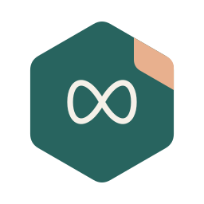
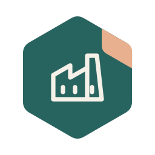

Kerneinteresser
Kerneinteresser
 AdfærdsdesignHvordan virker hjernen, hvilken logik følger den, og hvordan hjælper vi den med dette?
AdfærdsdesignHvordan virker hjernen, hvilken logik følger den, og hvordan hjælper vi den med dette?
Mine kompetencer
Jeg synes, det er spændende, hvordan små ting kan gøre det lettere eller sværere at bruge en løsning. Hvad står der på knappen? Kan man finde det, man skal bruge? Er det tydeligt, hvad der sker, når man trykker?
Det har mine roller lært mig
Fra salg og kundekontakt ved jeg, at man er nødt til at se på den konkrete situation. Det samme gælder, når jeg laver mine egne værktøjer. Det, der virker oplagt for mig, er ikke nødvendigvis oplagt for den, der skal bruge det.
Det kan jeg bidrage med
Jeg kan godt lide at bygge noget, prøve det af og rette til. Især når en lille ændring i tekst eller opbygning kan gøre en opgave lettere at komme igennem. Også på en dag, hvor overskuddet ikke er så stort.

NeurodivergensForskellige hjerner = forskellige udgangspunkter og krav.
Neurodivergens interesserer mig meget. Hvordan vi tænker forskelligt, reagerer på indtryk og får en hverdag til at fungere. Og hvad der sker, når kravene og rammerne ikke rigtig passer til den, der skal være i dem.
Det hænger for mig sammen med diagnoseforståelse, ADL og praktisk læring. Jeg vil gerne arbejde med konkrete ting, der hjælper med at komme i gang, holde overblik og få hverdagen til at hænge sammen.
 Produktdesign og produktudviklingFra idé på skærmen til noget i hænderne
Produktdesign og produktudviklingFra idé på skærmen til noget i hænderne
Hos Superfos skulle vi prøve, hvad 3D-printerne kunne bruges til. Jeg spurgte, om vi kunne tage min pendel som eksempel. Den havde jeg tegnet i Blender. Så fik vi printet bundrammen i resin og toppen på en FDM-printer. Pludselig stod jeg med noget i hænderne, som før kun havde været på en skærm. Det var helt vildt.
Jeg kunne ikke tegne CAD på det tidspunkt, så mine kolleger og jeg havde hver vores del af arbejdet. Vi fandt en masse ting, der skulle løses mellem Blender og CAD, og som vi kunne bruge i senere opgaver. Jeg fik også ret stor respekt for, hvor meget der lå i CAD.
Det er stadig noget af det, der driver mig: at man kan begynde fra nul, lære sig nogle ting og ende med et produkt i hænderne. Og at det bliver bedre, når andre er med og stiller spørgsmål til det, man har lavet.
 Reparation og bæredygtighedVi blæser til krig mod planlagt forældelse og brug-og-smid-væk-kulturen.
Reparation og bæredygtighedVi blæser til krig mod planlagt forældelse og brug-og-smid-væk-kulturen.
Jeg kan godt lide at finde ud af, hvordan ting er skruet sammen, og om de kan repareres. Kan man skifte den del, der er gået i stykker? Kan en reservedel tegnes og printes? Jeg synes, det giver mening at tænke over den slags allerede, når man designer noget, og bruge de materialer, man har, hvor det er muligt.
 Grafisk designFotoredigering, filmklipning og 3D-visualisering
Grafisk designFotoredigering, filmklipning og 3D-visualisering
Fotoredigering, filmklipning, 3D-rendering og visualisering er lige mig. Jeg kan godt lide at arbejde med et billede, en film eller en 3D-model og få en idé til at se ud, som jeg har forestillet mig den. Det er også en stor del af, hvordan jeg viser mine egne produkter frem.
 Gaming og VRSpil og virtuelle verdener
Gaming og VRSpil og virtuelle verdener
Gaming og VR skal der også være plads til. Både selve spillene og det, man kan med virtuelle verdener. Jeg synes især, det er spændende at kunne gå ind i en 3D-verden og opleve størrelse, rum og ting omkring sig på en anden måde end på en almindelig skærm.

Lokal produktionFra idé til færdig ting tæt på, hvor den skal bruges
Jeg kan godt lide tanken om, at flere ting kan laves tæt på, hvor de skal bruges. Med 3D-print, CNC og almindeligt håndværk kan man lave mindre serier, reservedele og ting, der passer til et konkret behov. Det vil jeg gerne arbejde mere med og lære andre at bruge. Der er noget ret fedt i selv at kunne lave den del, man står og mangler.